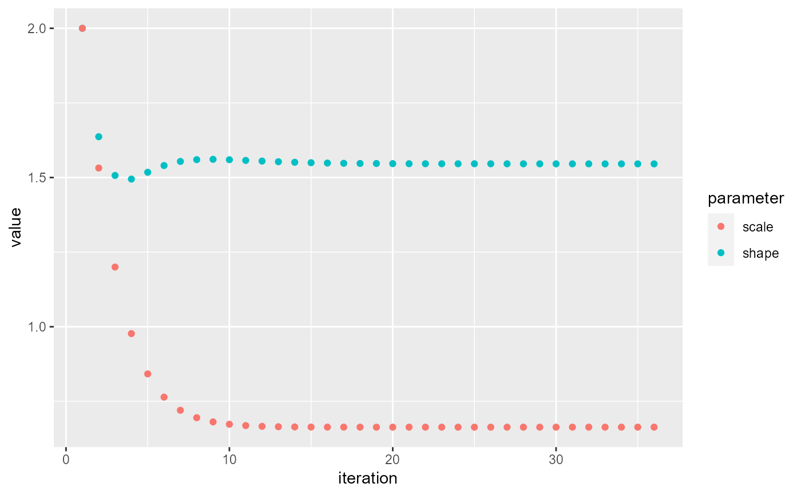
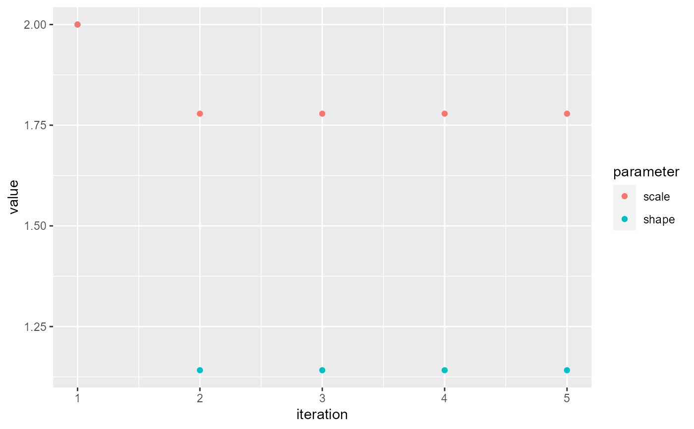

R/calcSI.R
performPEM.RdThe function performPEM uses relative transmission probabilities to estimate
the serial interval distribution
performPEM( df, indIDVar, timeDiffVar, pVar, initialPars, shift = 0, epsilon = 1e-05, plot = FALSE )
| df | The name of the dateset with transmission probabilities. |
|---|---|
| indIDVar | The name (in quotes) of the individual ID columns
(data frame |
| timeDiffVar | The name (in quotes) of the column with the difference in time between symptom onset (or its proxy) for the pair of cases. The units of this variable (hours, days, years) defines the units of the resulting SI distribution. |
| pVar | The column name (in quotes) of the transmission probabilities. |
| initialPars | A vector of length two with the shape and scale to initialize the gamma distribution parameters. |
| shift | A value in the same units as |
| epsilon | The difference between successive estimates of the shape and scale parameters that indicates convergence. |
| plot | A logical indicating if a plot should be printed showing the parameter estimates at each iteration. |
A data frame with one row and the following columns:
nIndividuals - the number of infectees who have SIs included
in the SI estimate.
shape - the shape of the estimated gamma distribution for the SI.
scale - the scale of the estimated gamma distribution for the SI.
meanSI - the mean of the estimated gamma distribution for the SI
(shape * scale + shift).
medianSI - the median of the estimated gamma distribution for the SI
(qgamma(0.5, shape, scale) + shift)).
sdSI - the standard deviation of the estimated gamma distribution for
the SI (shape * scale ^ 2)
This function is meant to be called by estimateSI
which estimates the serial interval distribution as well as clustering the
probabilities but can be called directly. The main reason to call performPEM
directly is for the plot argument. Setting this argument to TRUE
will produce a plot of the shape and scale parameters at each iteration.
For more details on the PEM algorithm see estimateSI.
Hens N, Calatayud L, Kurkela S, Tamme T, Wallinga J. Robust reconstruction and analysis of outbreak data: influenza A (H1N1) v transmission in a school-based population. American Journal of Epidemiology. 2012 Jul 12;176(3):196-203.
nbProbabilities clusterInfectors
performPEM
## First, run the algorithm without including time as a covariate. orderedPair <- pairData[pairData$infectionDiffY > 0, ] ## Create a variable called snpClose that will define probable links # (<3 SNPs) and nonlinks (>12 SNPs) all pairs with between 2-12 SNPs # will not be used to train. orderedPair$snpClose <- ifelse(orderedPair$snpDist < 3, TRUE, ifelse(orderedPair$snpDist > 12, FALSE, NA)) table(orderedPair$snpClose)#> #> FALSE TRUE #> 881 246## Running the algorithm #NOTE should run with nReps > 1. resGen <- nbProbabilities(orderedPair = orderedPair, indIDVar = "individualID", pairIDVar = "pairID", goldStdVar = "snpClose", covariates = c("Z1", "Z2", "Z3", "Z4"), label = "SNPs", l = 1, n = 10, m = 1, nReps = 1)#> | | | 0% | |======================================================================| 100%## Merging the probabilities back with the pair-level data nbResultsNoT <- merge(resGen[[1]], orderedPair, by = "pairID", all = TRUE) ## Estimating the serial interval # Using all pairs and plotting the parameters performPEM(nbResultsNoT, indIDVar = "individualID", timeDiffVar = "infectionDiffY", pVar = "pScaled", initialPars = c(2, 2), shift = 0, plot = TRUE)#> shape scale #> 32 1.501197 0.6396808# Clustering the probabilities first allClust <- clusterInfectors(nbResultsNoT, indIDVar = "individualID", pVar = "pScaled", clustMethod = "hc_absolute", cutoff = 0.05) performPEM(allClust[allClust$cluster == 1, ], indIDVar = "individualID", timeDiffVar = "infectionDiffY", pVar = "pScaled", initialPars = c(2, 2), shift = 0, plot = TRUE)#> shape scale #> 3 1.105127 2.107938# The above is equivalent to the following code using the function estimateSI() # though the plot will not be printed and more details will be added estimateSI(nbResultsNoT, indIDVar = "individualID", timeDiffVar = "infectionDiffY", pVar = "pScaled", clustMethod = "hc_absolute", cutoff = 0.05, initialPars = c(2, 2))#> [1] "Clustering Infectors" #> | | | 0% | |======================================================================| 100%#> clustMethod cutoff nIndividuals nInfectors pCluster shape scale #> 1 hc_absolute 0.05 78 1 0.7878788 1.105127 2.107938 #> meanSI medianSI sdSI #> 1 2.32954 1.676382 2.215971